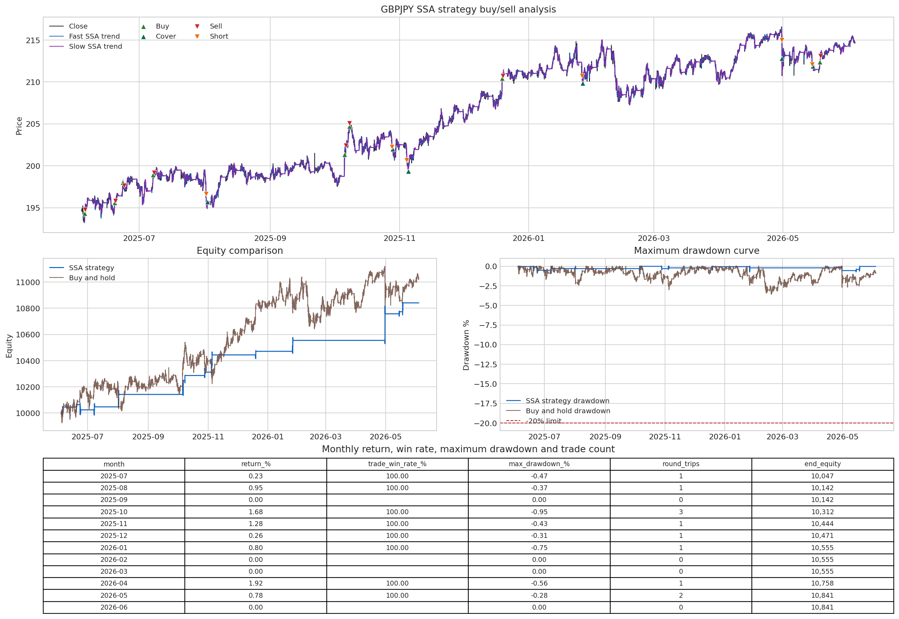
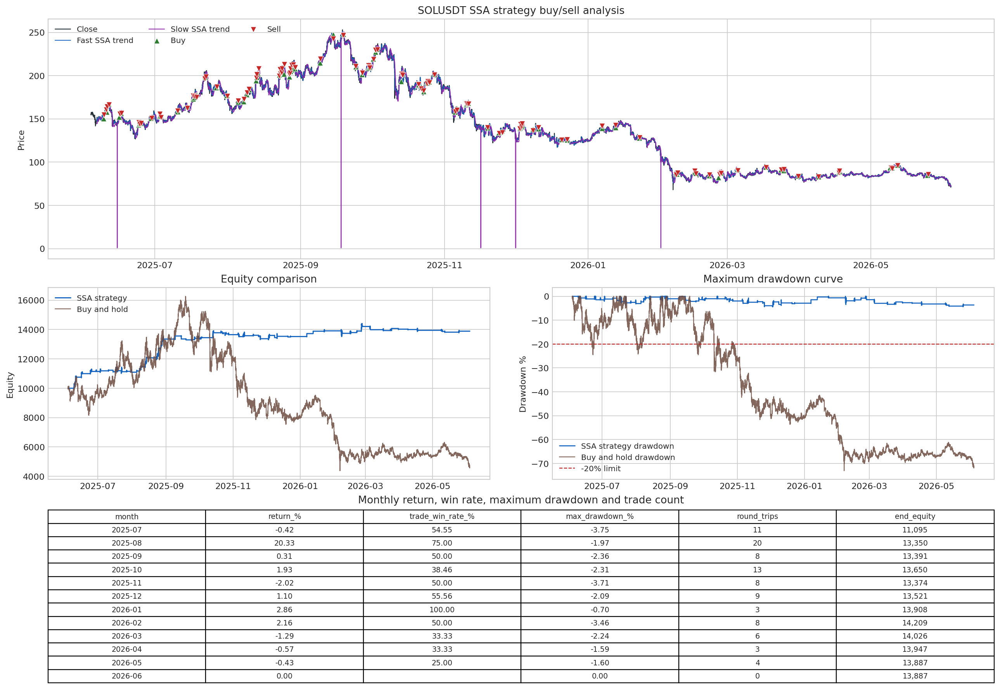

Native SSA high-return / low-drawdown strategy tutorial
Executed tutorial notebook. This page is generated from
examples/notebooks/quant_trading/07_native_ssa_high_return_low_drawdown_tutorial.ipynb and includes markdown cells, code cells, stdout, tables, and captured figures from the committed notebook.
Tutorial Navigation
| Track | Tutorial notebook |
|---|---|
| Roadmap | Tutorial 00 - Roadmap |
| Strategy Lab | 01 Trend-Following Lab |
| Tutorial Sequence | 01 Real Market Data and Feature Factory |
| Tutorial Sequence | 02 Decomposition-aware MA and MACD |
| Strategy Lab | 02 Oscillation-Reversion Lab |
| Strategy Expansion | 03 Method-Specific Variants |
| Tutorial Sequence | 03 Residual Mean Reversion |
| Strategy Expansion | 04 Component Pair Trading |
| Tutorial Sequence | 04 Donchian Breakout |
| Tutorial Sequence | 05 Pair-Spread Stat-Arb |
| Tutorial Sequence | 06 Cross-Sectional Rotation |
| Native SSA Replay | 07 Native SSA High-Return / Low-Drawdown |
Executed Notebook
GBPJPY: FX, 2x notional cap, long/short, 8.41% total return, 92.86% trade win rate, -0.95% maximum drawdown in the search replay.SOLUSDT: crypto spot, long-only, 38.87% total return, 54.37% trade win rate, -4.42% maximum drawdown in the search replay.
The strategy is named SSA strategy throughout the plots. It uses DeTime's SSA decomposition as the fast and slow trend estimator; it does not use a separate oscillator-baseline signal here.
Strategy logic
The SSA strategy is a decomposition version of a dual-trend mean-reversion system.
- Convert close prices to log prices.
- On a trailing training window only, compute a fast SSA trend and a slow SSA trend.
- Convert
fast SSA trend - slow SSA trendto basis points.1 bps = 0.01%, so100 bps = 1%. - In reversion mode, enter long when the fast SSA trend is far enough below the slow SSA trend and turns upward.
- Enter short when the fast SSA trend is far enough above the slow SSA trend and turns downward, if the configuration allows shorting.
- Exit when the spread mean-reverts or the fast SSA slope turns against the position.
- Signals are observed after bar
t; orders fill at the next bar's open.
All trend features are causal walk-forward values. The code only emits the last SSA trend value from each trailing window, then forward-fills it until the next recomputation point.
In [1]
from __future__ import annotations
from dataclasses import dataclass
from io import BytesIO
from pathlib import Path
from typing import Any
import numpy as np
import pandas as pd
import matplotlib.pyplot as plt
try:
from IPython.display import display, Image
except ImportError:
Image = None
def display(obj):
print(obj)
def display_png_figure(fig, *, dpi: int = 160) -> None:
buffer = BytesIO()
fig.savefig(buffer, format="png", dpi=dpi, bbox_inches="tight")
buffer.seek(0)
if Image is not None:
display(Image(data=buffer.getvalue()))
else:
print(fig)
PROJECT_DIR = Path.cwd().resolve()
from detime import DecompositionConfig, decompose, native_capabilities, native_extension_available
pd.set_option("display.max_columns", 80)
pd.set_option("display.width", 160)
plt.style.use("seaborn-v0_8-whitegrid")
print("working directory:", PROJECT_DIR)
print("native SSA available:", native_extension_available())
print("native capabilities:", native_capabilities() if native_extension_available() else {})
stdout
repository root: /rds/projects/s/spillf-systems-mechanobiology-health-disease/Zipeng/Detime/DeTime-main
native SSA available: True
native capabilities: {'ssa_decompose': True, 'std_decompose': True, 'gabor_stft_rfft': False, 'gabor_istft_rfft': False, 'gabor_cluster_decompose': False}
In [2]
SEARCH_REPLAY_METRICS = pd.DataFrame(
[
{
"asset_class": "fx",
"symbol": "GBPJPY",
"total_return": 0.084119,
"trade_win_rate": 0.928571,
"max_drawdown": -0.009466,
"profit_factor": 22.104442,
"round_trips": 14,
"sharpe": 2.330493,
"source": "dukascopy",
"bar_size": "3m",
"csv_path": "examples/quant_trading/data/intraday_crypto_fx/dukascopy/dukascopy_GBPJPY_3m_2025-06-04_2026-06-04.csv",
},
{
"asset_class": "crypto",
"symbol": "SOLUSDT",
"total_return": 0.388689,
"trade_win_rate": 0.543689,
"max_drawdown": -0.044184,
"profit_factor": 2.053341,
"round_trips": 103,
"sharpe": 2.839898,
"source": "binance",
"bar_size": "3m",
"csv_path": "examples/quant_trading/data/intraday_crypto_fx/binance/binance_SOLUSDT_3m_2025-06-04_2026-06-04.csv",
},
]
)
display(
SEARCH_REPLAY_METRICS.assign(
total_return=lambda x: (x["total_return"] * 100).round(2),
trade_win_rate=lambda x: (x["trade_win_rate"] * 100).round(2),
max_drawdown=lambda x: (x["max_drawdown"] * 100).round(2),
).rename(
columns={
"total_return": "total_return_%",
"trade_win_rate": "trade_win_rate_%",
"max_drawdown": "max_drawdown_%",
}
)
)
text/html
| asset_class | symbol | total_return_% | trade_win_rate_% | max_drawdown_% | profit_factor | round_trips | sharpe | source | bar_size | csv_path | |
|---|---|---|---|---|---|---|---|---|---|---|---|
| 0 | fx | GBPJPY | 8.41 | 92.86 | -0.95 | 22.104442 | 14 | 2.330493 | dukascopy | 3m | examples/quant_trading/data/intraday_crypto_fx... |
| 1 | crypto | SOLUSDT | 38.87 | 54.37 | -4.42 | 2.053341 | 103 | 2.839898 | binance | 3m | examples/quant_trading/data/intraday_crypto_fx... |
In [3]
@dataclass(frozen=True)
class SSAFeatureSpec:
fast_period: int
slow_period: int
train_mult: int
step: int
fast_rank: int = 6
slow_rank: int = 6
speed_mode: str = "fast"
@property
def fast_window(self) -> int:
return int(max(self.fast_period * 2, 8))
@property
def slow_window(self) -> int:
return int(max(self.slow_period * 2, 12))
@property
def train_window(self) -> int:
return int(max(self.slow_period * self.train_mult, self.slow_window + 20, 80))
@dataclass(frozen=True)
class SSATradeSpec:
feature: SSAFeatureSpec
strategy_mode: str = "trend_reversion"
entry_spread_bps: float = 5.0
exit_spread_bps: float = 0.0
min_fast_slope_bps: float = 0.5
require_slow_slope: bool = True
min_slow_slope_bps: float = 0.0
allow_short: bool = False
initial_cash: float = 10_000.0
trade_notional: float = 10_000.0
max_position_notional: float = 10_000.0
fee_bps: float = 2.0
slippage_bps: float = 1.0
@property
def name(self) -> str:
return (
f"SSA_strategy_f{self.feature.fast_period}_s{self.feature.slow_period}"
f"_tw{self.feature.train_window}_st{self.feature.step}"
f"_entry{self.entry_spread_bps:g}_exit{self.exit_spread_bps:g}"
).replace(".", "p")
SELECTED_SPECS: dict[str, SSATradeSpec] = {
"GBPJPY": SSATradeSpec(
feature=SSAFeatureSpec(fast_period=24, slow_period=96, train_mult=6, step=32, fast_rank=6, slow_rank=6),
entry_spread_bps=5.0,
exit_spread_bps=2.5,
min_fast_slope_bps=0.5,
require_slow_slope=True,
allow_short=True,
trade_notional=20_000.0,
max_position_notional=20_000.0,
fee_bps=0.35,
slippage_bps=0.5,
),
"SOLUSDT": SSATradeSpec(
feature=SSAFeatureSpec(fast_period=24, slow_period=192, train_mult=6, step=16, fast_rank=6, slow_rank=6),
entry_spread_bps=75.0,
exit_spread_bps=20.0,
min_fast_slope_bps=1.5,
require_slow_slope=True,
allow_short=False,
trade_notional=10_000.0,
max_position_notional=10_000.0,
fee_bps=2.0,
slippage_bps=1.0,
),
}
pd.DataFrame(
[
{
"symbol": symbol,
"fast_ssa_period": spec.feature.fast_period,
"slow_ssa_period": spec.feature.slow_period,
"train_window": spec.feature.train_window,
"step": spec.feature.step,
"entry_bps": spec.entry_spread_bps,
"exit_bps": spec.exit_spread_bps,
"min_fast_slope_bps": spec.min_fast_slope_bps,
"allow_short": spec.allow_short,
"trade_notional": spec.trade_notional,
"max_position_notional": spec.max_position_notional,
"fee_bps": spec.fee_bps,
"slippage_bps": spec.slippage_bps,
}
for symbol, spec in SELECTED_SPECS.items()
]
)
text/html
| symbol | fast_ssa_period | slow_ssa_period | train_window | step | entry_bps | exit_bps | min_fast_slope_bps | allow_short | trade_notional | max_position_notional | fee_bps | slippage_bps | |
|---|---|---|---|---|---|---|---|---|---|---|---|---|---|
| 0 | GBPJPY | 24 | 96 | 576 | 32 | 5.0 | 2.5 | 0.5 | True | 20000.0 | 20000.0 | 0.35 | 0.5 |
| 1 | SOLUSDT | 24 | 192 | 1152 | 16 | 75.0 | 20.0 | 1.5 | False | 10000.0 | 10000.0 | 2.00 | 1.0 |
In [4]
DATA_ROOT = PROJECT_DIR / "examples" / "quant_trading" / "data" / "intraday_crypto_fx"
MANIFEST_PATHS = [
PROJECT_DIR / "examples" / "quant_trading" / "reports" / "intraday_fx_3m_data" / "intraday_download_manifest.csv",
PROJECT_DIR / "examples" / "quant_trading" / "reports" / "intraday_crypto_3m_data" / "intraday_download_manifest.csv",
]
def _as_repo_path(path: str | Path) -> Path:
p = Path(path)
return p if p.is_absolute() else PROJECT_DIR / p
def find_symbol_csv(symbol: str, *, bar_size: str = "3m") -> Path:
symbol = symbol.upper()
for manifest_path in MANIFEST_PATHS:
if not manifest_path.exists():
continue
manifest = pd.read_csv(manifest_path)
mask = manifest.get("symbol", pd.Series(dtype=str)).astype(str).str.upper().eq(symbol)
if "bar_size" in manifest.columns:
mask &= manifest["bar_size"].astype(str).eq(bar_size)
if "status" in manifest.columns:
mask &= manifest["status"].astype(str).str.lower().eq("ok")
hits = manifest.loc[mask]
for raw_path in hits.get("output_path", []):
p = _as_repo_path(raw_path)
if p.exists():
return p
patterns = [f"**/*_{symbol}_{bar_size}_*.csv", f"**/*{symbol}*{bar_size}*.csv"]
for pattern in patterns:
for p in sorted(DATA_ROOT.glob(pattern)):
if p.is_file():
return p
raise FileNotFoundError(
f"Could not find {symbol} {bar_size} CSV. Put the downloaded file under {DATA_ROOT} "
"or pass csv_path=... to run_selected_strategy()."
)
def load_ohlcv_csv(path: str | Path) -> pd.DataFrame:
p = _as_repo_path(path)
df = pd.read_csv(p)
date_col = next((c for c in ["Datetime", "datetime", "Date", "date", "timestamp", "Timestamp", "time", "Time"] if c in df.columns), None)
if date_col is not None:
df[date_col] = pd.to_datetime(df[date_col], errors="coerce", utc=True)
df = df.dropna(subset=[date_col]).set_index(date_col)
else:
df.index = pd.to_datetime(df.index, errors="coerce", utc=True)
df = df.loc[df.index.notna()]
rename = {}
for col in df.columns:
low = str(col).lower()
if low == "open":
rename[col] = "Open"
elif low == "high":
rename[col] = "High"
elif low == "low":
rename[col] = "Low"
elif low == "close":
rename[col] = "Close"
elif low in {"volume", "basevolume", "tickvolume"}:
rename[col] = "Volume"
df = df.rename(columns=rename)
if "Close" not in df.columns:
raise ValueError(f"{p} must contain a Close column.")
if "Open" not in df.columns:
df["Open"] = df["Close"]
if "High" not in df.columns:
df["High"] = df[["Open", "Close"]].max(axis=1)
if "Low" not in df.columns:
df["Low"] = df[["Open", "Close"]].min(axis=1)
if "Volume" not in df.columns:
df["Volume"] = 0.0
out = df[["Open", "High", "Low", "Close", "Volume"]].apply(pd.to_numeric, errors="coerce")
out = out.sort_index().replace([np.inf, -np.inf], np.nan).ffill().bfill().dropna(subset=["Open", "Close"])
out = out[(out["Open"] > 0) & (out["Close"] > 0)]
if out.empty:
raise ValueError(f"{p} contains no positive OHLC rows.")
return out
def infer_periods_per_year(symbol: str, *, source: str, bar_size: str) -> int:
bars_per_day = {"1m": 1440, "3m": 480, "15m": 96}.get(bar_size, 1)
is_fx = source.lower() == "dukascopy" or (len(symbol) == 6 and symbol.isalpha())
return int(bars_per_day * (252 if is_fx else 365))
In [5]
def last_ssa_trend(
values: np.ndarray,
*,
period: int,
window: int,
rank: int,
backend: str = "auto",
speed_mode: str = "fast",
) -> float:
cfg = DecompositionConfig(
method="SSA",
params={"window": int(window), "rank": int(rank), "primary_period": int(period)},
backend=backend,
speed_mode=speed_mode,
seed=42,
)
result = decompose(np.asarray(values, dtype=float), cfg)
trend = np.asarray(result.trend, dtype=float).reshape(-1)
return float(trend[-1]) if trend.size else float("nan")
def walkforward_dual_ssa_trends(close: pd.Series, spec: SSAFeatureSpec, *, backend: str = "auto") -> pd.DataFrame:
clean = pd.Series(close).sort_index().astype(float)
clean = clean.replace([np.inf, -np.inf], np.nan).ffill().bfill()
clean = clean[clean > 0].dropna()
y = np.log(clean)
out = pd.DataFrame(index=clean.index, columns=["fast_trend", "slow_trend"], dtype=float)
start = int(max(spec.train_window, spec.slow_window + 2, spec.fast_window + 2))
for end in range(start, len(y) + 1, int(spec.step)):
window = y.iloc[max(0, end - spec.train_window) : end]
if len(window) < start:
continue
values = window.to_numpy(dtype=float)
stamp = y.index[end - 1]
try:
fast = last_ssa_trend(
values,
period=spec.fast_period,
window=spec.fast_window,
rank=spec.fast_rank,
backend=backend,
speed_mode=spec.speed_mode,
)
slow = last_ssa_trend(
values,
period=spec.slow_period,
window=spec.slow_window,
rank=spec.slow_rank,
backend=backend,
speed_mode=spec.speed_mode,
)
except Exception as exc:
print(f"SSA failed at {stamp}: {exc}")
continue
out.loc[stamp, "fast_trend"] = fast
out.loc[stamp, "slow_trend"] = slow
out = out.ffill()
out["log_close"] = y.reindex(out.index)
out["fast_slope_bps"] = out["fast_trend"].diff(int(spec.step)).div(max(int(spec.step), 1)) * 10_000.0
out["slow_slope_bps"] = out["slow_trend"].diff(int(spec.step)).div(max(int(spec.step), 1)) * 10_000.0
out["spread_bps"] = (out["fast_trend"] - out["slow_trend"]) * 10_000.0
out["fast_ssa_trend"] = np.exp(out["fast_trend"])
out["slow_ssa_trend"] = np.exp(out["slow_trend"])
return out
In [6]
def dual_ssa_events(features: pd.DataFrame, spec: SSATradeSpec) -> dict[str, pd.Series]:
f = features.replace([np.inf, -np.inf], np.nan)
spread = f["spread_bps"]
fast_slope = f["fast_slope_bps"]
slow_slope = f["slow_slope_bps"]
valid = spread.notna() & fast_slope.notna() & slow_slope.notna()
long_entries = (spread <= -spec.entry_spread_bps) & (fast_slope >= spec.min_fast_slope_bps)
short_entries = (spread >= spec.entry_spread_bps) & (fast_slope <= -spec.min_fast_slope_bps)
if spec.require_slow_slope:
long_entries &= slow_slope >= spec.min_slow_slope_bps
short_entries &= slow_slope <= -spec.min_slow_slope_bps
long_exits = (spread >= -spec.exit_spread_bps) | (fast_slope <= -spec.min_fast_slope_bps)
short_exits = (spread <= spec.exit_spread_bps) | (fast_slope >= spec.min_fast_slope_bps)
if not spec.allow_short:
short_entries = pd.Series(False, index=f.index)
short_exits = pd.Series(False, index=f.index)
return {
"long_entries": (valid & long_entries).fillna(False).astype(bool),
"long_exits": long_exits.fillna(False).astype(bool),
"short_entries": (valid & short_entries).fillna(False).astype(bool),
"short_exits": short_exits.fillna(False).astype(bool),
}
def run_cash_backtest(ohlcv: pd.DataFrame, features: pd.DataFrame, spec: SSATradeSpec, *, periods_per_year: int) -> dict[str, Any]:
data = ohlcv.sort_index().copy()
events = dual_ssa_events(features.reindex(data.index), spec)
cash = float(spec.initial_cash)
position = 0.0
avg_entry = 0.0
entry_fee = 0.0
entry_time = None
entry_side = None
pending_close = False
pending_open_side = 0
notional = min(float(spec.trade_notional), float(spec.max_position_notional))
fee_rate = float(spec.fee_bps) / 10_000.0
slip_rate = float(spec.slippage_bps) / 10_000.0
equity_rows = []
order_rows = []
trade_rows = []
for i, (stamp, row) in enumerate(data.iterrows()):
open_px = float(row["Open"])
close_px = float(row["Close"])
if pending_close and position != 0.0 and np.isfinite(open_px) and open_px > 0:
if position > 0:
fill = open_px * (1.0 - slip_rate)
gross = position * fill
fee = gross * fee_rate
cash += gross - fee
gross_pnl = (fill - avg_entry) * position
exit_side = "sell"
else:
fill = open_px * (1.0 + slip_rate)
units = abs(position)
gross = units * fill
fee = gross * fee_rate
cash -= gross + fee
gross_pnl = (avg_entry - fill) * units
exit_side = "cover"
net_pnl = gross_pnl - fee - entry_fee
order_rows.append({"timestamp": stamp, "action": exit_side, "price": fill, "units": abs(position), "fee": fee})
trade_rows.append(
{
"entry_time": entry_time,
"exit_time": stamp,
"side": entry_side,
"entry_price": avg_entry,
"exit_price": fill,
"units": abs(position),
"gross_pnl": gross_pnl,
"net_pnl": net_pnl,
"return_on_notional": net_pnl / max(notional, 1e-12),
}
)
position = 0.0
avg_entry = 0.0
entry_fee = 0.0
entry_time = None
entry_side = None
if pending_open_side != 0 and position == 0.0 and np.isfinite(open_px) and open_px > 0:
if pending_open_side == 1:
fill = open_px * (1.0 + slip_rate)
units = notional / fill
fee = notional * fee_rate
cash -= notional + fee
position = units
action = "buy"
entry_side = "long"
elif spec.allow_short:
fill = open_px * (1.0 - slip_rate)
units = notional / fill
fee = notional * fee_rate
cash += notional - fee
position = -units
action = "short"
entry_side = "short"
else:
fill = np.nan
units = 0.0
fee = 0.0
action = "skip_short"
if action != "skip_short":
avg_entry = fill
entry_fee = fee
entry_time = stamp
order_rows.append({"timestamp": stamp, "action": action, "price": fill, "units": units, "fee": fee})
pending_close = False
pending_open_side = 0
equity = cash + position * close_px
equity_rows.append({"timestamp": stamp, "cash": cash, "position_units": position, "close": close_px, "equity": equity})
if i + 1 >= len(data):
continue
le = bool(events["long_entries"].iloc[i])
lx = bool(events["long_exits"].iloc[i])
se = bool(events["short_entries"].iloc[i])
sx = bool(events["short_exits"].iloc[i])
if position > 0:
pending_close = lx or se
pending_open_side = -1 if se and spec.allow_short else 0
elif position < 0:
pending_close = sx or le
pending_open_side = 1 if le else 0
else:
pending_open_side = 1 if le else (-1 if se and spec.allow_short else 0)
account = pd.DataFrame(equity_rows).set_index("timestamp")
orders = pd.DataFrame(order_rows)
trades = pd.DataFrame(trade_rows)
stats = performance_summary(account, trades, periods_per_year=periods_per_year, initial_cash=spec.initial_cash)
return {"account": account, "orders": orders, "trades": trades, "stats": stats, "events": events}
In [7]
def drawdown(equity: pd.Series) -> pd.Series:
equity = pd.Series(equity).astype(float)
return equity / equity.cummax().replace(0, np.nan) - 1.0
def performance_summary(account: pd.DataFrame, trades: pd.DataFrame, *, periods_per_year: int, initial_cash: float) -> dict[str, float]:
equity = account["equity"].astype(float)
returns = equity.pct_change().replace([np.inf, -np.inf], np.nan).fillna(0.0)
total_return = equity.iloc[-1] / initial_cash - 1.0
years = max(len(equity) / float(periods_per_year), 1e-12)
cagr = (equity.iloc[-1] / initial_cash) ** (1.0 / years) - 1.0 if equity.iloc[-1] > 0 else np.nan
vol = returns.std(ddof=0) * np.sqrt(float(periods_per_year))
sharpe = returns.mean() * float(periods_per_year) / vol if vol > 0 else np.nan
max_dd = drawdown(equity).min()
if trades.empty:
trade_win_rate = np.nan
profit_factor = np.nan
avg_trade_net_pnl = np.nan
round_trips = 0
else:
pnl = trades["net_pnl"].astype(float)
wins = pnl[pnl > 0].sum()
losses = -pnl[pnl < 0].sum()
trade_win_rate = float((pnl > 0).mean())
profit_factor = float(wins / losses) if losses > 0 else np.inf
avg_trade_net_pnl = float(pnl.mean())
round_trips = int(len(trades))
return {
"total_return": float(total_return),
"cagr": float(cagr),
"volatility": float(vol),
"sharpe": float(sharpe),
"max_drawdown": float(max_dd),
"bar_hit_rate": float((returns > 0).mean()),
"trade_win_rate": float(trade_win_rate) if np.isfinite(trade_win_rate) else np.nan,
"profit_factor": float(profit_factor) if np.isfinite(profit_factor) else np.inf,
"round_trips": float(round_trips),
"orders": float(round_trips * 2),
"average_trade_net_pnl": float(avg_trade_net_pnl) if np.isfinite(avg_trade_net_pnl) else np.nan,
"final_equity": float(equity.iloc[-1]),
"net_profit": float(equity.iloc[-1] - initial_cash),
}
def month_period_index(index: pd.Index) -> pd.PeriodIndex:
dt_index = pd.DatetimeIndex(index)
if dt_index.tz is not None:
dt_index = dt_index.tz_convert(None)
return dt_index.to_period("M")
def monthly_performance_table(account: pd.DataFrame, trades: pd.DataFrame, *, initial_cash: float) -> pd.DataFrame:
equity = account["equity"].astype(float)
rows = []
previous_equity = float(initial_cash)
trade_month = None
if not trades.empty:
trade_month = pd.to_datetime(trades["exit_time"], utc=True).dt.tz_convert(None).dt.to_period("M")
for period, month_equity in equity.groupby(month_period_index(equity.index)):
month_return = month_equity.iloc[-1] / previous_equity - 1.0
month_dd = drawdown(month_equity).min()
if trade_month is None:
month_trades = trades.iloc[0:0]
else:
month_trades = trades.loc[trade_month == period]
win_rate = np.nan if month_trades.empty else float((month_trades["net_pnl"] > 0).mean())
rows.append(
{
"month": str(period),
"return_%": month_return * 100.0,
"trade_win_rate_%": win_rate * 100.0 if np.isfinite(win_rate) else np.nan,
"max_drawdown_%": month_dd * 100.0,
"round_trips": int(len(month_trades)),
"end_equity": float(month_equity.iloc[-1]),
}
)
previous_equity = float(month_equity.iloc[-1])
return pd.DataFrame(rows)
def stats_frame(results: dict[str, dict[str, Any]]) -> pd.DataFrame:
rows = []
for symbol, result in results.items():
row = {"symbol": symbol}
row.update(result["stats"])
rows.append(row)
out = pd.DataFrame(rows)
percent_cols = ["total_return", "cagr", "volatility", "max_drawdown", "bar_hit_rate", "trade_win_rate"]
for col in percent_cols:
if col in out.columns:
out[col] = out[col] * 100.0
return out.rename(
columns={
"total_return": "total_return_%",
"cagr": "cagr_%",
"volatility": "volatility_%",
"max_drawdown": "max_drawdown_%",
"bar_hit_rate": "bar_hit_rate_%",
"trade_win_rate": "trade_win_rate_%",
}
)
In [8]
def plot_ssa_strategy_dashboard(symbol: str, ohlcv: pd.DataFrame, features: pd.DataFrame, result: dict[str, Any], *, months_in_table: int = 12) -> pd.DataFrame:
account = result["account"]
orders = result["orders"]
trades = result["trades"]
spec = SELECTED_SPECS[symbol]
close = ohlcv["Close"].reindex(account.index)
strategy_equity = account["equity"]
buy_hold_equity = spec.initial_cash * close / close.dropna().iloc[0]
strategy_dd = drawdown(strategy_equity) * 100.0
buy_hold_dd = drawdown(buy_hold_equity) * 100.0
monthly = monthly_performance_table(account, trades, initial_cash=spec.initial_cash)
fig = plt.figure(figsize=(16, 11), constrained_layout=True)
grid = fig.add_gridspec(3, 2, height_ratios=[1.25, 1.0, 0.9])
ax_price = fig.add_subplot(grid[0, :])
ax_equity = fig.add_subplot(grid[1, 0])
ax_dd = fig.add_subplot(grid[1, 1])
ax_table = fig.add_subplot(grid[2, :])
ax_price.plot(close.index, close, label="Close", color="#263238", linewidth=1.0)
ax_price.plot(features.index, features["fast_ssa_trend"], label="Fast SSA trend", color="#1565c0", linewidth=1.0, alpha=0.9)
ax_price.plot(features.index, features["slow_ssa_trend"], label="Slow SSA trend", color="#8e24aa", linewidth=1.0, alpha=0.9)
if not orders.empty:
plotted = set()
markers = {
"buy": ("^", "#2e7d32", "Buy"),
"sell": ("v", "#c62828", "Sell"),
"short": ("v", "#ef6c00", "Short"),
"cover": ("^", "#00695c", "Cover"),
}
for action, group in orders.groupby("action"):
if action not in markers:
continue
marker, color, label = markers[action]
label = label if label not in plotted else None
ax_price.scatter(group["timestamp"], group["price"], marker=marker, s=44, color=color, edgecolor="white", linewidth=0.5, label=label, zorder=5)
plotted.add(markers[action][2])
ax_price.set_title(f"{symbol} SSA strategy buy/sell analysis")
ax_price.set_ylabel("Price")
ax_price.legend(loc="upper left", ncols=3, fontsize=9)
ax_equity.plot(strategy_equity.index, strategy_equity, label="SSA strategy", color="#1565c0", linewidth=1.3)
ax_equity.plot(buy_hold_equity.index, buy_hold_equity, label="Buy and hold", color="#6d4c41", linewidth=1.0, alpha=0.85)
ax_equity.set_title("Equity comparison")
ax_equity.set_ylabel("Equity")
ax_equity.legend(loc="upper left", fontsize=9)
ax_dd.plot(strategy_dd.index, strategy_dd, label="SSA strategy drawdown", color="#1565c0", linewidth=1.2)
ax_dd.plot(buy_hold_dd.index, buy_hold_dd, label="Buy and hold drawdown", color="#6d4c41", linewidth=1.0, alpha=0.85)
ax_dd.axhline(-20.0, color="#b71c1c", linestyle="--", linewidth=1.0, label="-20% limit")
ax_dd.set_title("Maximum drawdown curve")
ax_dd.set_ylabel("Drawdown %")
ax_dd.legend(loc="lower left", fontsize=9)
ax_table.axis("off")
table_data = monthly.tail(months_in_table).copy()
display_table = table_data.copy()
for col in ["return_%", "trade_win_rate_%", "max_drawdown_%"]:
display_table[col] = display_table[col].map(lambda x: "" if pd.isna(x) else f"{x:.2f}")
display_table["end_equity"] = display_table["end_equity"].map(lambda x: f"{x:,.0f}")
table = ax_table.table(
cellText=display_table.values,
colLabels=display_table.columns,
loc="center",
cellLoc="center",
bbox=[0.0, 0.0, 1.0, 1.0],
)
table.auto_set_font_size(False)
table.set_fontsize(8.5)
table.scale(1.0, 1.15)
ax_table.set_title("Monthly return, win rate, maximum drawdown and trade count", pad=8)
display_png_figure(fig)
plt.close(fig)
return monthly
In [9]
def run_selected_strategy(symbol: str, *, csv_path: str | Path | None = None, backend: str = "auto", max_bars: int | None = None) -> dict[str, Any]:
spec = SELECTED_SPECS[symbol]
metrics_row = SEARCH_REPLAY_METRICS.loc[SEARCH_REPLAY_METRICS["symbol"].eq(symbol)].iloc[0]
path = _as_repo_path(csv_path) if csv_path is not None else find_symbol_csv(symbol, bar_size=str(metrics_row["bar_size"]))
ohlcv = load_ohlcv_csv(path)
if max_bars is not None:
ohlcv = ohlcv.tail(int(max_bars)).copy()
periods_per_year = infer_periods_per_year(symbol, source=str(metrics_row["source"]), bar_size=str(metrics_row["bar_size"]))
features = walkforward_dual_ssa_trends(ohlcv["Close"], spec.feature, backend=backend)
backtest = run_cash_backtest(ohlcv, features, spec, periods_per_year=periods_per_year)
return {"symbol": symbol, "csv_path": path, "ohlcv": ohlcv, "features": features, **backtest}
In [10]
# For a quick notebook check, set MAX_BARS to a smaller value such as 20000.
# For the full one-year replay used by the search table, keep MAX_BARS = None.
SSA_BACKEND = "auto"
MAX_BARS = None
results = {symbol: run_selected_strategy(symbol, backend=SSA_BACKEND, max_bars=MAX_BARS) for symbol in SELECTED_SPECS}
display(stats_frame(results).round(4))
text/html
| symbol | total_return_% | cagr_% | volatility_% | sharpe | max_drawdown_% | bar_hit_rate_% | trade_win_rate_% | profit_factor | round_trips | orders | average_trade_net_pnl | final_equity | net_profit | |
|---|---|---|---|---|---|---|---|---|---|---|---|---|---|---|
| 0 | GBPJPY | 8.4119 | 5.7347 | 2.4052 | 2.3305 | -0.9466 | 0.6878 | 92.8571 | 22.1044 | 14.0 | 28.0 | 60.0850 | 10841.1903 | 841.1903 |
| 1 | SOLUSDT | 38.8689 | 38.8689 | 11.8078 | 2.8399 | -4.4184 | 1.7751 | 54.3689 | 2.0533 | 103.0 | 206.0 | 37.7368 | 13886.8916 | 3886.8916 |
In [11]
monthly_tables = {}
for symbol, result in results.items():
monthly_tables[symbol] = plot_ssa_strategy_dashboard(symbol, result["ohlcv"], result["features"], result)
display(monthly_tables[symbol].tail(12).round(2))
image/png

text/html
| month | return_% | trade_win_rate_% | max_drawdown_% | round_trips | end_equity | |
|---|---|---|---|---|---|---|
| 1 | 2025-07 | 0.23 | 100.0 | -0.47 | 1 | 10047.05 |
| 2 | 2025-08 | 0.95 | 100.0 | -0.37 | 1 | 10142.01 |
| 3 | 2025-09 | 0.00 | NaN | 0.00 | 0 | 10142.01 |
| 4 | 2025-10 | 1.68 | 100.0 | -0.95 | 3 | 10312.29 |
| 5 | 2025-11 | 1.28 | 100.0 | -0.43 | 1 | 10443.95 |
| 6 | 2025-12 | 0.26 | 100.0 | -0.31 | 1 | 10471.15 |
| 7 | 2026-01 | 0.80 | 100.0 | -0.75 | 1 | 10554.60 |
| 8 | 2026-02 | 0.00 | NaN | 0.00 | 0 | 10554.60 |
| 9 | 2026-03 | 0.00 | NaN | 0.00 | 0 | 10554.60 |
| 10 | 2026-04 | 1.92 | 100.0 | -0.56 | 1 | 10757.65 |
| 11 | 2026-05 | 0.78 | 100.0 | -0.28 | 2 | 10841.19 |
| 12 | 2026-06 | 0.00 | NaN | 0.00 | 0 | 10841.19 |
image/png

text/html
| month | return_% | trade_win_rate_% | max_drawdown_% | round_trips | end_equity | |
|---|---|---|---|---|---|---|
| 1 | 2025-07 | -0.42 | 54.55 | -3.75 | 11 | 11094.57 |
| 2 | 2025-08 | 20.33 | 75.00 | -1.97 | 20 | 13349.87 |
| 3 | 2025-09 | 0.31 | 50.00 | -2.36 | 8 | 13391.11 |
| 4 | 2025-10 | 1.93 | 38.46 | -2.31 | 13 | 13649.72 |
| 5 | 2025-11 | -2.02 | 50.00 | -3.71 | 8 | 13373.74 |
| 6 | 2025-12 | 1.10 | 55.56 | -2.09 | 9 | 13521.16 |
| 7 | 2026-01 | 2.86 | 100.00 | -0.70 | 3 | 13908.24 |
| 8 | 2026-02 | 2.16 | 50.00 | -3.46 | 8 | 14209.12 |
| 9 | 2026-03 | -1.29 | 33.33 | -2.24 | 6 | 14026.24 |
| 10 | 2026-04 | -0.57 | 33.33 | -1.59 | 3 | 13946.79 |
| 11 | 2026-05 | -0.43 | 25.00 | -1.60 | 4 | 13886.89 |
| 12 | 2026-06 | 0.00 | NaN | 0.00 | 0 | 13886.89 |
Reading the output
- The equity panel compares a fixed-notional SSA strategy account against simple buy-and-hold on the same close series.
- The drawdown panel is the running percentage drawdown from each curve's own high-water mark. The dashed line marks the 20% drawdown constraint.
- The monthly table is separate from the chart panels so it does not cover the equity curve.
round_tripscounts completed trades: one entry plus one exit is one round trip.- The search table at the top records the full BlueBEAR replay. Re-running this notebook should be close, but exact values can differ if the data file, DeTime native backend, or dependency versions differ.